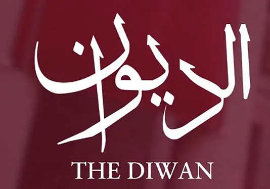

Professional Experiences

Scream 6
Recreated scenes from "Scream 6", utilizing the original audio and replicating the camera angles to achieve an authentic and precise recreation of the film’s visual style.
Key Achievements:
- Successfully matched the original camera movements and shots
- Developed a deep understanding of the filmmaking techniques used in the horror genre
- Enhanced skills in scene analysis and visual storytelling
- Received positive feedback from professors and peers for the film's accuracy
Doors Production
Directed and edited films under *Doors Production*, focusing on creating engaging visual narratives and refining my storytelling techniques.
Key Achievements:
- Directed multiple short films, collaborating with a creative team to bring unique concepts to life
- Edited films to enhance pacing, continuity, and emotional impact
- Improved directing and communication skills through hands-on experience and project management
- Received recognition for innovative film direction and polished editing work


The Diwan
Attended *The Diwan*, a prominent GCC conference, which provided an opportunity to expand my professional network and gain valuable insights into the industry.
Key Achievements:
- Broadened my network by connecting with industry leaders and professionals from the GCC region
- Gained a deeper understanding of emerging trends and best practices within the industry
- Attended panel discussions and workshops that covered a wide range of business and creative topics
- Incorporated new perspectives and industry knowledge to refine my approach to future projects